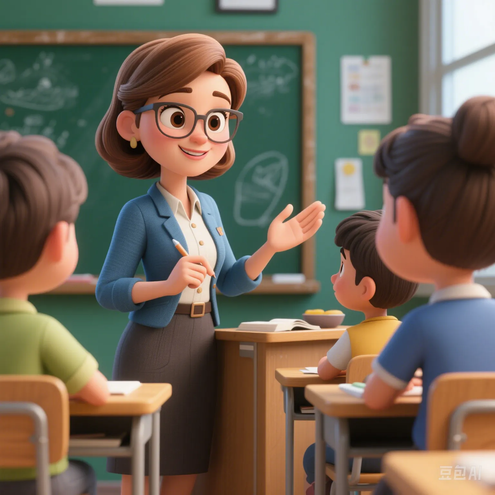

What Values Do Children Around the World Learn First? The Enlightenment of Good and Evil in Different Cultures
PeaceLove.Top Insights :2025-04-17
🌍 The "Enlightenment of Good and Evil" for Children Around the World
Every child is exposed to a series of educations about "good" and "evil" during the growth process. These educations are not only moral knowledge passed on by parents or teachers but are also deeply influenced by each country's culture, social background, and historical traditions. From the East to the West, different cultures shape children's understanding of good and evil and moral judgments. But what exactly shapes children's moral concepts? What are the similarities and differences in values education in different countries and regions? Let's take a look at the moral concepts that children around the world learn first in different cultural backgrounds.
👶 Early Education for Values Enlightenment
Childhood is a crucial period for the formation of human values. During this period, the influence of parents, schools, religions, and the social environment cannot be underestimated. By comparing the education systems of several countries, let's see what values children around the world are most commonly exposed to in the early stage of growth.
- United States: Enlightenment of Independence and Fairness
In the United States, children's moral enlightenment starts at a very early age, emphasizing independence and fairness. American parents usually encourage children to make decisions from an early age, express their opinions, and learn how to get along with others equally.
Core values:
- Independence: Children are taught to have the ability to think independently and respect individual freedom.
- Fairness and justice: American education focuses on cultivating children's understanding of fairness, especially emphasizing racial and gender equality.
- China: Education of Collectivism and Filial Piety
China's values education emphasizes collectivism and filial piety. Parents and teachers often let children understand what is the responsibility to the family and society from an early age by telling classic Chinese stories and moral norms.
Core values:
- Filial piety: Respect for elders, especially parents.
- Collectivism: Emphasize teamwork and making contributions to society.
- Japan: Education of Harmony and Etiquette
In Japan, children's moral education emphasizes harmony and etiquette, that is, "getting along harmoniously with others" and "respecting others". From an early age, children are taught how to abide by social rules, respect others, and avoid conflicts as much as possible.
Core values:
- Harmony: Emphasize the harmonious relationship between people and avoid conflicts.
- Etiquette: Pay attention to social rules and courtesy. Children are taught how to salute and be modest from an early age.
- India: Combination of Morality and Spiritual Belief
Children in India receive education in spiritual belief and moral responsibility from an early age. Especially in religious education, religious beliefs such as Hinduism, Buddhism, and Sikhism have a profound impact on children's worldviews.
Core values:
- Moral responsibility: Children are taught to assume social responsibilities and help those in need.
- Tolerance and respect: Emphasize tolerance and understanding of different religions and cultures.
- Germany: Cultivation of Honesty and Responsibility
Germany's values education focuses on honesty and responsibility. German parents usually teach children to express their thoughts honestly from an early age and also to bear the consequences of their actions, cultivating children's sense of responsibility.
Core values:
- Honesty: Encourage children to tell the truth from an early age and respect the sincerity of others.
- Responsibility: Cultivate children's responsibility for their own actions and decisions.
📊 Comparison of Values Education for Children Around the World
To more intuitively understand the moral enlightenment of children in different countries, we summarize the core values first passed on in different countries through the following table:
| Country/Region | Core Values | Education Method | Influencing Factors |
|---|---|---|---|
| United States | Independence, fairness | Encourage expression and equal treatment of others | Social freedom and democratic values |
| China | Filial piety, collectivism | Children understand responsibilities through family and school education | Confucian culture and family concept |
| Japan | Harmony, etiquette | Attach importance to the education of social norms and courtesy | Social harmony and collective consciousness |
| India | Tolerance, responsibility | Combine religious education with the cultivation of moral responsibility | Religious beliefs and spiritual world |
| Germany | Honesty, responsibility | Emphasize children's personal responsibility and honesty | German culture and responsibility education |
Conclusion: Different cultures have a significant impact on children's moral education, and most countries around the world focus on cultivating children's social responsibility, respect for others, and understanding of fairness.
🌱 How Do Cultural Differences Shape Children's Moral Views?
In today's globalized world, cultural exchanges are becoming more and more frequent. Children will be exposed to values education from different countries from an early age. Cultural differences are not only reflected in children's behavior patterns but also affect their perception of the world and moral judgments.
🌍 The Significance of Cross - Cultural Education
The significance of cross - cultural education lies in allowing children to be exposed to different values from an early age and cultivating their global perspective. This educational method can help children better understand and respect the differences between different cultures, thus becoming more inclusive and understanding social members.
🧩 Future Outlook: New Trends in Global Moral Education
With the progress of globalization and technology, future children will grow up in a more diverse environment. In this case, the trend of global moral education may change:
- Multicultural education: Integrate the moral standards of different countries and cultures into the education system to cultivate children's global perspective and cross - cultural communication ability.
- Digital moral education: With the development of technology, children will be exposed to a wider range of moral education content through technology platforms such as the Internet and artificial intelligence.
- Emphasis on the cultivation of social responsibility: Future moral education will pay more attention to children's social responsibility, especially in aspects such as environmental protection and social justice.
🏁 Conclusion: Challenges and Opportunities in Global Moral Education
From the United States to China, from Germany to India, the moral enlightenment of children around the world is deeply influenced by each country's culture. Whether it is independence, fairness, filial piety, or responsibility, the values that children learn during the growth process profoundly shape their perception of the world. In the future, with the continuous advancement of globalization, our education system will pay more attention to cross - cultural education and the cultivation of social responsibility to help children better develop in the globalized world.